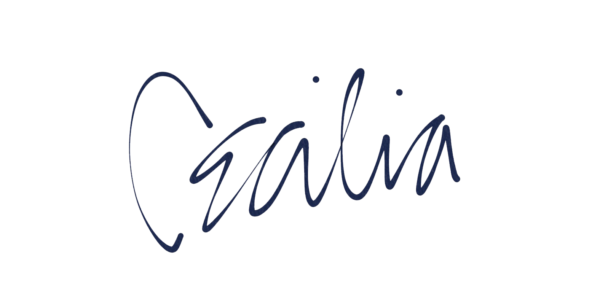

Thanks for stopping by my design gallery. I love intuitive, clean design. Some of my favorite work has an element of minimalism, neutrality, and clever detail. When I'm not expressing creativity, I'm reading, watching, and listening to the latest news in technology, the millennial economy, and cool stuff happening in the world. I also really enjoy a well-made documentary. If you have any suggestions on a good read or what I should watch next, feel free to drop me a line by clicking on the mail icon. I'm an open door to exchange thought and ideas. Also, let me know if you have felt any insipiration from my work! It's so important to stay inspired ♥
